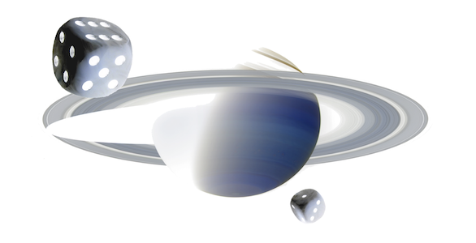

In this episode, Andrew and Matthew invite me back to talk about Bayes, what it is and how to apply it. We explore the structure of Bayes, when it can …
In this episode, Andrew and Matthew invite me back to talk about Bayes, what it is and how to apply it. We explore the structure of Bayes, when it can …

Matthew hosts a conversation between myself and Jonathan McLatchie to further the conversation on why Jonathan is confident that the resurrection of Jesus can be accepted as an historical event …

In this episode I discuss my approach to teaching statistical inference including taking the Bayesian approach first instead of delegating it to an advanced or elective topic. We talk about …

In this episode, Andrew and Matthew invite myself and Prof. Philip Goff to discuss Panpsychism. What is it, why should we take it seriously and can we test it? I …

In this discussion/debate, I talk with Travis Dickinson about the concept of faith. Travis is the author of "Stand Firm: Apologetics and the Brilliance of the Gospel" and says …

In this episode I join Andrew and Matthew to discuss The Fine Tuning Argument, The Second Law of Thermodynamics, contingency, evidence for the Christian claim of a historical resurrection of …

This video is part of the Bryant Faculty Spotlight series. In this episode I speaks about his book Statistical Inference for Everyone, an open textbook that approaches introductory statistical inference …

Here I present how our cognitive biases -- confirmation bias, innumeracy, either-or bias -- can lead to significant problems, but also can be solved with the proper use of probability theory. Essentially …

In a comment on my Wordpress site (a site I am replacing with this one) on a post about "Creationist Math", the commenter says:
I believe we all choose to …
Seems as if everyone is talking about the recent Ken Ham vs Bill Nye debate on evolution and creation, so I figured I'd put in my two cents.
I couldn't …
In my introduction to probability in class this week, I was asked if proof and evidence really meant the same thing. They don't. To summarize,
Proof does not exist in …
As part of the Unbelievable Project, I am taking notes and "arm-chair" responding to each of the Unbelievable podcast episodes satisfying a set of simple rules.
See here for a …
As part of the Unbelievable Project, I am taking notes and "arm-chair" responding to each of the Unbelievable podcast episodes satisfying a set of simple rules.
See here for a …
I was listening to a debate about the irrationality of theism, and the theist, Randall Rauser introduced me to a concept in philosophy that I had not heard of: properly …
While preparing for physics class, I found this gem: the Flash Mind Reader! So, here is a simple website which claims to read your mind. This is a pretty extraordinary …
In a discussion on The Limits Of Science with Lawrence Krass, Dan Dennett, and Massimo Pigliucci, there is much haggling over the relationship between science and philosophy. Although I think …
In a discussion on The Limits Of Science with Lawrence Krass, Dan Dennett, and Massimo Pigliucci, Dan Dennett makes an analogy with chess (and its rules) to morality. The analogy …

The cover art for my book, Statistical Inference for Everyone, is something created by me and I'd like to explain my design. We have a picture of Saturn, taken by …
For anyone interested in statistical inference or probability, you should check out my new book (released under the Creative Commons license). You can download it here:
I've completely redone my website, http://web.bryant.edu/~bblais! I may be moving my blog over there at some point, depending on how it goes. For right now I …
I am a Scientist, Skeptic, and Professor at Bryant University and the IBNS, Brown University. My goal is to make technical subject matters widely accessible and to use my analytical and computational skills to assist anyone with their science-related problems.